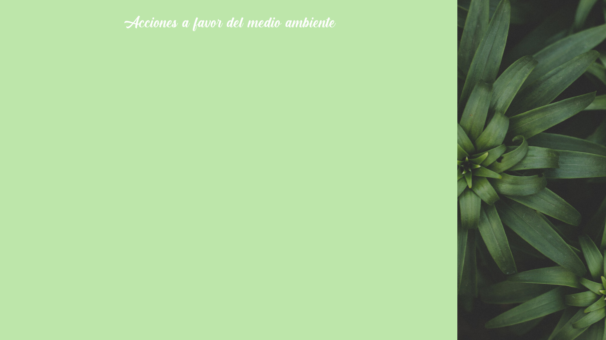
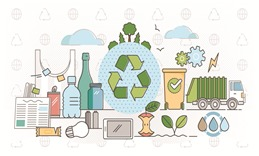
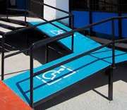

1.-Reducción del consumo energético y de agua. Realizamos auditorías energéticas de los procesos e instalaciones, ayuda a saber si estamos utilizando las mejores técnicas disponibles.
2.-Mejoramos la gestión de los materiales y residuos peligrosos. Gestionamos los residuos contaminantes a través de un gestor autorizado.
3.-Optimizamos la envoltura de nuestros productos. Realizamos un plan de prevención de envolvimiento específico. Utilizamos nuevos materiales más biodegradables.
4.-Sensibilizamos y ofrecimos formación e información ambiental a nuestros trabajadores. Hicimos esta labor ya que la empresa es la que toma todas estas medidas pero las que las llevan a cabo son todos nuestros trabajadores.
5.-Esta acción es la más importante de todas ya que decidimos plantar dos arboles por cada uno que usemos. Ya que el material principal para la elaboración de nuestro producto es la madera.

1.-Arreglar los espacios. Habilitar los espacios físicos del negocio para permitir el acceso a personas con discapacidad o para que personas con condiciones diferentes estén cómodas.
2.-Cumplir con la ley. La Ley 21.015 de Inclusión Laboral para personas con discapacidad, esta ley tiene por finalidad promover una inclusión laboral eficaz de las personas con discapacidad, tanto en el ámbito público como en el privado.
3.-Inclusión como objetivo estratégico.El primer impacto positivo lo verá el área de Recursos Humanos ya que ofrece un universo de candidatos más amplio y expande el acceso a capacidades, conocimientos y talentos.
4.-Visibilizar la diversidad. Perfeccionar las oficinas para personas con discapacidad es un cambio importante, pero estético, finalmente. La transformación también debe ir por dentro, partiendo desde la cultura organizacional de la empresa.
5.-Adelantarse. Fomentar la diversidad y la inclusión en el lugar de trabajo, además de que no puede haber discriminación en el trabajo por la orientación sexual o identidad de género, religión, edad, etnia o procedencia cultural.
